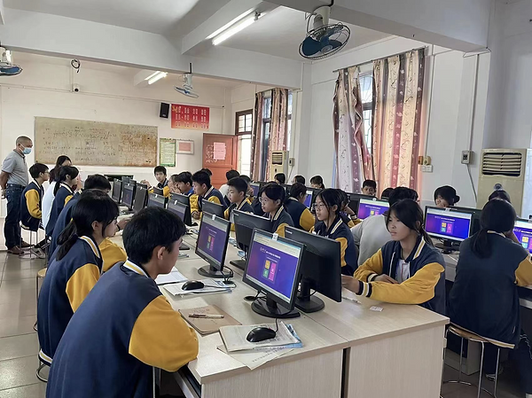

Adolescent Health Enhancing Long-term Plan (A-HELP)

Project leaders
Juan Wang & Yinan Duan
Overview
The A-HELP is a prospective cohort study that aims to examine the current situation and influencing factors related to suicidal thoughts and behaviors among children and adolescents in China. We cordially invite students, parents, and teachers to participate in our study, as their valuable input will help shape our research and subsequent services. The A-HELP initiative conducts large-scale screenings, along with individualized interview evaluations and gene collection, to gather comprehensive data. As of 2023, the A-HELP project has been successfully implemented in Yunfu City, located in Guangdong Province. However, to establish a nationally representative study, we aspire to forge cooperative relationships with additional regions and researchers in the future.
By collaborating with various stakeholders, our ultimate goal is to improve the overall well-being and mental health outcomes of Chinese youth. Through the insights gained from this study, we seek to provide tailored support and interventions that are informed by evidence-based research, contributing to a brighter and healthier future for adolescents across the nation.